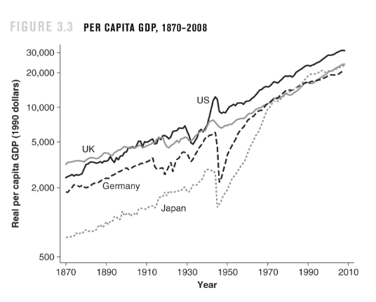

Mathematics Section ℼ
No intro here, let's get straight to business!
| Contents |
|---|
Mathematics and Psychology
Weber -Fencher laws in psychometrics
If you are carrying 100 books and someone adds 1 book to your load you probably wouldn't notice the difference vs if you were carrying just one book right? That's what the Weber-Fencher laws tell us regarding stimulus as a whole. The Weber law says in order for us to tell the difference, there has to be a 2% change in the stimulus, for example if there's 10 spoons of sugar in a cup of tea, you have to add 0.2 of a spoon to feel any change, if there is 100 however, you have to add 2 spoons, if you add one you won't feel a difference according to the theory. It accounts for all other sensations as well, hearing, seeing, smelling and touching.
Then there's the Fencher method which says there's a logarithmic relationship between the perceived strength and the stimulus strength, hence the change in perceived stimulus declines the stronger a stimulus gets since the derivative(\(dy\over dx\)) of \(y=log(x)\) is declining for positive values, kind of like diminishing marginal utility. Economists have also used these theories to study some consumer behaviour


....
The exponential model of memory retention
 According to many psychologists, the ability to retain what you just learned declines quickly at first then levels off as time passes. According to a Wixted and Besen study of 1991 it can be represented by an exponential model p= \(aex^{-bx}\), where p is the probability of a person being able to correctly recall an item learned. \(x\) is the time since learning it. And 0< a< 1 being the baseline retention before time passed, b>0 is the rate of retention drops with time, if your b is lower your probability of retention drops at a lower rate. So don't start studying the day before your exams basically.
According to many psychologists, the ability to retain what you just learned declines quickly at first then levels off as time passes. According to a Wixted and Besen study of 1991 it can be represented by an exponential model p= \(aex^{-bx}\), where p is the probability of a person being able to correctly recall an item learned. \(x\) is the time since learning it. And 0< a< 1 being the baseline retention before time passed, b>0 is the rate of retention drops with time, if your b is lower your probability of retention drops at a lower rate. So don't start studying the day before your exams basically.
...
Mathematics and Love
If you were to ask someone about the relationship between maths and love they'd probably tell you about how much they hate it…( I swear the joke sounded better in my head). Anyway…:.
 There's a formula for the socially acceptable dating age difference between men and women and it is \({Age\over 2}\)+7. So if a person is 30 the youngest person they should date is \({30\over 2}\)+7=15+7=22. The formula is a y=mx+c type graph hence the acceptable age difference keeps rising the older the 2 people are as you can see from the graph.(image source: https://en.wikipedia.org/wiki/Age_disparity_in_sexual_relationships)
There's a formula for the socially acceptable dating age difference between men and women and it is \({Age\over 2}\)+7. So if a person is 30 the youngest person they should date is \({30\over 2}\)+7=15+7=22. The formula is a y=mx+c type graph hence the acceptable age difference keeps rising the older the 2 people are as you can see from the graph.(image source: https://en.wikipedia.org/wiki/Age_disparity_in_sexual_relationships)
Apparently this formula has been around since the early 1900s however, it was not meant to be for the youngest age a person should date like it's used today, but the ideal age of a partner for a man, which is interesting. Studies have shown it's fairly accurate but only when the man is the older person. According to a USA study from 2017 a huge majority of married couples in the US have an age gap of 1-3 and that is more common in many other countries too.
...
The Mathematics of Marital Conflict, 1998 study by John Gottman, Catherine Swanson, and James Murray.
50% of married American couples end in divorce and some researchers did a study on why this happens by putting couples and letting them talk while they analysed their conversations, facial expressions and many other factors and then made a mathematical model that predicts whether or not they’d end in divorce.
Summary of the process
Analysis of the graphs
Conclusions from the findings
They computed for each conversation turn. Behaviour was considered positive if it correlated positively with marital happiness and negative otherwise. Rapid couples interaction scoring system (RCISS) and The Specific Affect Coding System(SPAFF) was used to create numerical values of the behaviours. The sequence of scores were \(W_t\,H_t,W_{t+1},H_{t+1}\).\(H_t\) is the husband variable at time t and \(W_t\) is for the wife (so it's: wife talks, husband responds, wife responds and so on.)
$$ W_{t+1}=a+r_1W_{t}+I_{HW}(H_t)...(1) $$ $$ H_{t+1}=a+r_2H_{t+1}+I_{WH}(W_t)...(2) $$
\(a\), \(b\) and \(r\) are the parameters estimated from the data. \(r\) is the emotional inertia, which is the tendency of the person to remain in the same state over a period of time. \(a\) and \(b\) is the initial uninfluenced level of positivity minus negativity each spouse brings to the interaction. The \(I_{HW}\) and \(I_{WH}\) are the influence functions. Once the \(r_1\),\(r_2\), \(a\) and \(b\) are estimated from the data, (\(a\)+\(r_1W_t\)) and (\(b\)+\(r_2H_t\)) are then subtracted from equations (1) and (2) respectively, and the remainder will be the influence functions which were then ploted.
There are 2 types of graphs for both husband and wife (one type is for a couple that ends in divorce and one type is for a couple that has a lasting marriage), but we'll focus on the 2 types of husbands in a couple since the graphs are the same for the wives.
Graph A and B represent the influence the husbands have on their wives, what the husband does is the x-axis and the wife's reaction is the y-axis. In graph A, the husband has no influence on her until he does or says something at P or -P, then he gets either a big positive or a big negative reaction . And in B, the husband in a different couple, gets a little reaction for everything he does, either positive or negative, so the growth is linear. Before we move one in your opinion, what couple do you think would have a longer lasting marriage?
They used the term “threshold of negativity”, which is the point at which negativity has an impact on the partners immediately following the behaviour. Apparently a low threshold like in B means couples end up happy and stable. It is the "negativity detection effect", spouses responding to negative behaviour when it is less escalated.
With couples of graphs A, they accept negativity. Setting their threshold for a response at a higher level or more negative level, then blowing up when they've had enough, if the negativity threshold is really high, it means either the husband or wife has to become very aggressive to get a proper reaction from their spouse in an argument, which is a high risk factor for divorce, meanwhile couples in graph B who see a problem and immediately bring it up before it escalates too high usually have a longer lasting marriage, it was compared to how it's better to go to the hospital immediately when you notice a symptom and not when a disease gets worse. The bible verse Ephesians 4:26 ‘’Do not let the sun go down while you are still angry’’, was stated to support this. On the contrary though some studies have suggested that couples can cultivate an empathetic response to their partner's negativity, but they didn't say anything about that leading to a longer lasting marriage.
Mathematics and Medicine
Computed Tomography
 Computed Tomography scanning, commonly known as CT scanning is a radiographic imaging technique that generates cross sectional images of organs and tissue structures. An X-ray tube rotates, scans and performs measurements from different angles, which is then sent to a computer that does a mathematical algorithm and solves a certain integral then gives results, it is used for diagnosing patients and with checkups. Maths used includes the Radon and the Fourier transform, fourier slice theorem, some numerical methods, and other mathematical techniques.(Image source: https://en.m.wikipedia.org/wiki/CT_scan)
Computed Tomography scanning, commonly known as CT scanning is a radiographic imaging technique that generates cross sectional images of organs and tissue structures. An X-ray tube rotates, scans and performs measurements from different angles, which is then sent to a computer that does a mathematical algorithm and solves a certain integral then gives results, it is used for diagnosing patients and with checkups. Maths used includes the Radon and the Fourier transform, fourier slice theorem, some numerical methods, and other mathematical techniques.(Image source: https://en.m.wikipedia.org/wiki/CT_scan)
...
...
Mathematics and Geography
Global positioning system
 Global positioning system also known as GPS, helps solve the main problem of navigation with maps, which is where you are on the map. It uses trilateration which is based upon measuring distances using geometry and trigonometry. Satellites transmit radio signals containing the time the signal was sent and the location of the satellite, the signals are then received by GPS receivers like our phones. Since the electromagnetic waves travel through the speed of light they arrive after a certain time duration, We find the distance by multiplying the speed of light and the time it took the signal to arrive \(distance={speed\times{ (received\space time-sent\space time)}}\). Then spherical geometry and 2 other satelites is used to find the position of the GPS.
Global positioning system also known as GPS, helps solve the main problem of navigation with maps, which is where you are on the map. It uses trilateration which is based upon measuring distances using geometry and trigonometry. Satellites transmit radio signals containing the time the signal was sent and the location of the satellite, the signals are then received by GPS receivers like our phones. Since the electromagnetic waves travel through the speed of light they arrive after a certain time duration, We find the distance by multiplying the speed of light and the time it took the signal to arrive \(distance={speed\times{ (received\space time-sent\space time)}}\). Then spherical geometry and 2 other satelites is used to find the position of the GPS.
4 satellites are actually needed because there's a time offset between our phones and atomic clocks used by satellites. So a 4th satellite and some calculus is used to calculate the offset time. Satellites are placed in a way that we can access at least 4 wherever we are which is pretty cool. Einstein's theory of relativity also plays a factor since satellites orbit the earth at really fast speeds and experience less of the earth's gravity which affects their atomic clocks. These conditions are however, integrated to the computers that do these calculations, thus accounting for the rates of the atomic clocks. If this wasn't done there'd be an added error of 10km every day which is crazy to think about. Mathematicians, engineers and scientists are the real unappreciated heroes of our modern world honestly.(Image source: https://www.scienceabc.com/innovation/how-gps-global-positioning-system-works-satellite-smartphone.html)
Mathematics and Politics
Median Voter Theorem
the median voter theorem states that political parties that cater to the median or average person in a group of people are more likely to win, because if for example a party tries to cater too much to the rich people they might lose voters from the poorer group and if they cater to the poor they'll lose votes from the rich, but if they cater to the middle persons though they'll get votes from middle people, some votes from rich people and some from the poor who are willing to compromise vs a party that only caters to and gets votes from one side. It's not just rich and poor that play a factor to who the middle person is but also a wider range of ideologies and/or policies. I learnt about this little theory in second year economics and it also applies to businesses too, sometimes even movies. The model has some obvious flaws though that I won't get into, but you can go and learn more about it if you're interested.
Mathematics and Economics
Check Economics SectionMathematics and Music
Check Music SectionConvergence and Equilibrium
Convergence
Convergence and equilibrium are 2 of my favourite concepts in mathematics, they are both cool concepts which can be found anywhere and are the backbone of our modern world, now without further adieu let's start off with convergence. What is convergence? Convergence is when things from different places are meeting at a point or place(image source: https://www.agriinvestor.com/ag-starting-see-real-convergence/>.
...
In mathematics you see this with sequences and functions as they approach a limit, a convergent function/sequence will just keep getting closer and closer to the convergent point as the domain values increase or decrease. This is a formal mathematical definition of convergence:
A sequence \(a_{n}\) converges to limit \(L\) if and only if for every \( \varepsilon > 0 \) there exists a natural number \(N\) such that \(\forall_{n\epsilon N}\) :$$n >N \Longrightarrow \ |a_n-L|<\epsilon$$ this is denoted by \(lim_{n \rightarrow \infty }a_n=L\).\(a_{n}\) tends to \(L\) as \(n\) tends to infinity, Which is basically describing what is happening in thie following graph

One thing that makes mathematical convergence possible is limits in calculus, because they help us make use of the concept of infinity. Limits and convergence are the backbone of numerical analysis. Numerical analysis helps us solve problems that are unsolvable by conventional means, by using approximations that are so close to the answer they're practically the same as the answer. Numerical methods include the Gauss eliminitaion method, the Taylor series (which can approximate any function as a polynomial), the Riemann sum(for integrals), the Finite difference method (for differential equations), Newton-rhapson method, Euler method, Runge-kutta methods, the Gradient descent and many others.
 Since these methods are algorithmic, they require a lot of iterations to get accurate results, but thanks to computers this is made easier, computers are particularly very good at equations like these if programmed correctly. Back in 1943-1946 the ENIAC(Electronic Numerical Integrator and Computer) was developed, it was built to solve numerical problems(among other things ) to help with the war and calculate ballistic firing tables quicker. The ENIAC could do 5000 calculations per second, smartphones nowadays can do more than 100 billion calculations per second.
Since these methods are algorithmic, they require a lot of iterations to get accurate results, but thanks to computers this is made easier, computers are particularly very good at equations like these if programmed correctly. Back in 1943-1946 the ENIAC(Electronic Numerical Integrator and Computer) was developed, it was built to solve numerical problems(among other things ) to help with the war and calculate ballistic firing tables quicker. The ENIAC could do 5000 calculations per second, smartphones nowadays can do more than 100 billion calculations per second.
Convergence is useful in many branches of mathematics,Like statistics and probability with Central limit theorem and the law of large numbers, which states that the larger the sample the more the results converge to the true value, it's also useful in computer science and machine learning with the gradient descent algorithm. In Economics there is a theory that states that poor countries converge to richer countries. Developing countries have the potential to grow at a faster rate than developed countries because of diminishing marginal returns. Rich countries have already developed their science and technologies so poor countries can learn just from them right? Well…that’s not always the case for a variety of reasons, but we’re talking about convergence not economics!(image source:Introduction to Economic Growth, 3rd Edition.Norton & Company.)
There's a lot more convergence phenomena in our world, like convergence in animal evolution, where some animals have developed similar traits despite having no common ancestor with that specific trait. Eg. butterflies, birds and bats both have wings but no common ancestor with wings, maybe pigs will really fly someday, who knows.There is also Media convergence, which is the process by which multiple media technologies are brought together into one computerised device.
Another one is Convergence insufficiency which happens when the nerves that control our eye muscles don't work the right way. Which means in the absence of converge insufficiency, our eyes are always converging when we look at things.
There is also convergence in research, where a development in one research field leads to a development in many other fields.
As you can see, Convergence is everywhere!!! Are there any other convergence phenomena you have noticed in our world? Let me know if there is.
Equilibrium.
 Equilibrium is when opposing forces or influences are balanced, if you did economics you probably recognise the equilibrium as the point where demand and supply are equal, the definition applies to that too as the forces of demand and supply are balanced at that point, Equilibrium is very prominent in economic theories, not only in demand and supply (there's a lot of exaples of it in the economics section), it is also refered to as the steady state. In physics it's when an object is at rest, isn't moving and has zero acceleration. There's stable and unstable equilibrium. Stable equilibrium imply the object in equilibrium will converge back to the equilibrium if it is displaced a little, like a spring when extended, and unstable equilibrium imply that a little displacement induced will result in the divergence of the object, Like a ball on top of a hill if pushed.(www.researchgate.net/figure/Stable-and-unstable-equilibria-In-a-stable-equilibrium-a-small-disturbance-caused-by_fig1_261758142)
Equilibrium is when opposing forces or influences are balanced, if you did economics you probably recognise the equilibrium as the point where demand and supply are equal, the definition applies to that too as the forces of demand and supply are balanced at that point, Equilibrium is very prominent in economic theories, not only in demand and supply (there's a lot of exaples of it in the economics section), it is also refered to as the steady state. In physics it's when an object is at rest, isn't moving and has zero acceleration. There's stable and unstable equilibrium. Stable equilibrium imply the object in equilibrium will converge back to the equilibrium if it is displaced a little, like a spring when extended, and unstable equilibrium imply that a little displacement induced will result in the divergence of the object, Like a ball on top of a hill if pushed.(www.researchgate.net/figure/Stable-and-unstable-equilibria-In-a-stable-equilibrium-a-small-disturbance-caused-by_fig1_261758142)
...
My Graph Art